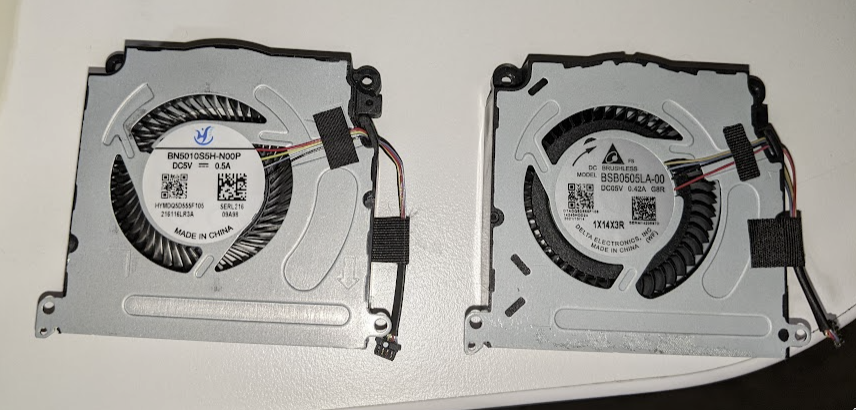
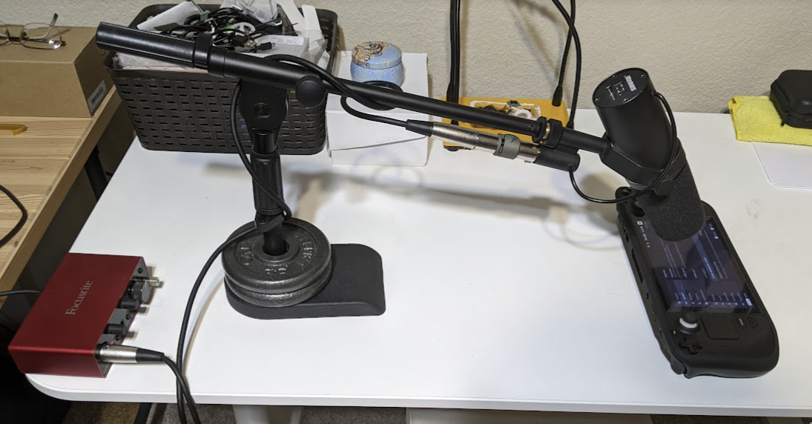
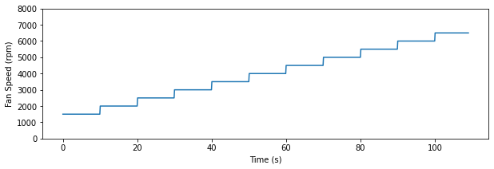

1 A reasonably decent experimental investigation of fan whine in the Valve Steam Deck
1.1 Introduction
In this unnecessarily formally written document I present a reasonably decent experimental investigation of fan whine in the Valve Steam Deck. The fan whine (which I will refer to simply as whine from here on out) tends to exist in a very narrow band in frequency above about 2khz, going all the way up to 5khz depending on the speed of the fan. The whine is allegedly present in at least some but possibly not all fans manufactured by Delta. There are also Steam Deck models that contain a fan manufactured by Huaying which allegedly does not contain the whine.

Figure 1: Huaying on left, Delta on right
There has also been a suggested fix for the whine in the Delta fans. The so called "tape mod" involved sticking 4 or so small pieces of electrical tape on the inside of the back cover of the Steam Deck right behind the Valve logo. The increased pressure on the fan reportedly changed the acoustics of the fan and reduced the whine. I will be presenting a comparison of the fan whine in the Delta fan, the Delta fan with the tape mode, and finally the Huaying fan.
1.2 Experiment Setup
Data collection consisted of recording the fan noise in a consistent and repeatable environment that's reasonably free of background noise under the circumstances that I do not have access to a studio. The factors I was able to control were keeping the AC off and sending the kids outdoor to toughen them up in the Texas summer. The picture below shows the full recording setup.

Figure 2: The recording setup
The mic used is the Shure SM7B plugged into a Triton Fethead active preamp which in turn is plugged into a Focusrite Scarlett solo second gen. The SM7B's frequency response is set to be as flat as allowed using the switches on the back. The mic is put very close above the screen of the Steam Deck in a way that the exhaust is closeby but the air from it does not directly hit the mic. Note that the point of the experiment is to record the whine in high quality and not to try to evaluate the noise as a whole which is why the mic is kept close rather than some arbitrary distance away from the Deck based on my personal experience of how I use the Deck.
I wanted to capture fan noise for three different configurations:
- Original Delta fan
- Original Delta fan with tape mod
- Replacement Huaying fan from ifixit
In order to create a repeatable test, I wrote a script for controlling fan speed as shown in the figure below.

Figure 3: Fan speed in experiments
1.3 Recordings
The three videos below show the resulting recordings of this experiment. The fan RPM at any given time is displayed on the upper left hand side, and the background is a spectrogram of the recording with the y axis representing the frequency in hz (the k means thousand effectively converting it to kilohertz). I recommend listening to all three videos, though in all of them you can skip to at least 3000rpm as nothing interesting happens prior to then.
First, the Delta fan without the tape mod.
Second, the Delta fan with the tape mod.
And finally, the Huaying fan.
1.4 Analysis
Other than simply hearing the recordings I have chosen to build the spectrograms as well as shown in the videos above. In the image below all three spectrograms are vertically stackes for easier comparison. Note that the scales on these are consistent and, as mentioned before, all recordings were made in very similar conditions using the same equipment.
A quick note on how to read the spectrograms: from left to right, each column of the spectrogram image represents a small slice of time. The bottom of this column represents an audio frequency of 0hz, and as you go further up the column the frequency increases (this is also written ont he vertical axis on the left). The darker that part of the image is, the more the contribution from that frequency. Note that the entire spectrogram gets darker somewhat uniformly as we go from left to right. This is because the fan speed is being increased and so the contribution of all frequencies to the resulting audio is also increasing.

Figure 4: All three fans spectrograms
With this data I have arrived at a set of conclusions that I hope are obvious to everyone that has listened to the recordings and seen the spectrograms:
- The Delta fan contains a very narrow band high frequency whine the frequency of which increases as a function of fan speed (I've been told this is because it's a "blade passing frequency"). If you cannot hear this whine in the recordings, you should still be able to see the dark staircase like line in the spectrograms. This is the fan whine.
- Without the tape mod, the whine becomes somewhat audible at only 3000 RPM. This is barely above the RPMs that my Steam Deck idles at (2800). As we go from 3000 to 4000 RPM the whine becomes very obvious and (at least for me) hard to ignore, and things get worse from there.
- The so called "tape mod" does in fact mitigate the whine issue. It appears to delay the whine by about 1000 RPM as it now becomes audible at around 4000 RPM and obvious at around 5000 RPM.
- The Huaying fan contains no discernable whine. In general the fan appears to be just as loud as the Delta fan, but lacks the high frequency tone present in the Delta fan. This is also evident from the spectrogram where no discernable staircase shape can be found.
1.5 Conclusion
I uhh … don't really know how to end things. Presentations I give at work usually just end with a blank slide which is the visual equivalent of a thud. I don't know why I'm even writing a separate conclusion section, the conclusions are already present in the analysis section.
tl;dr: The fan whine is very real in at least some Delta fans (or rather, at least one, quite probably more), the "tape mod" does indeed mitigate the whine (no my dears, it's not a placebo, you're not imagining it), and the Huaying fan has no discernable whine.